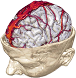

|
News
March 2011: The paper "IEEE Visualization Contest 2010 Winner: Interactive Planning Tools for Brain Tumor Resections" has been accepted for publication in the Journal of IEEE Computer Graphics and Applications (Visualization Viewpoints).
The paper was authored by the winning team members: Stefan Diepenbrock, Joerg-Stefan Praflni, Florian Lindemann, Hans-Werner Bothe, and Timo Ropinski. Along with the paper, a sidebar authored by the contest chairs will be published.
Congratulations to the winning team and the three honorable-mention submissions!
Brainlab will sponsor an Apple iPad 16GB
for the winning team.
Plenary talk of the winners: 27. October 2010, 4:15pm, Grand America Hotel,
Salt Lake City, USA
All submissions can now be downloaded here (~
550MB).
There was a submission record of 11 high-quality entries this year which beats the previous records of 2004 and 2006 (6 submissions each, have a look at all previous contests here). Taken into account the difficulty of importing and processing all the data sets, this is a great success. Thanks a lot to all the hard-working contestants!
Visualization Contest 2010
The 2010 IEEE Visualization Contest, which will be held at the IEEE Visualization 2010 in Salt Lake City, USA (24.10.2010 - 29.10.2010), targets the field of multimodal visualization for neurosurgical planning.
The primary challenge in planning neurosurgical interventions lies in the identification of the various structures at risk and understanding how they relate and interact with each other.
The most relevant risk-structures are functional areas located in the gray matter on the cortex and white matter fibre tracts connecting different areas. During surgery, both need to be treated with equal care.
Damaging a functional area or a connecting WM tract will result in serious patient impairment.

Therefore, the task in neurosurgical planning is to identify all related risk-structures, their spatial relation to the lesion that's target to resection, as well as a safe access path to that lesion.
Multimodal visualization should support the surgeon in performing this task.
With its powerful capabilities of displaying and identifying a variety of functional and structural properties of the brain, Magnetic Resonance Imaging (MRI) has changed the face of modern neurosurgery. It has become the most powerful tool for preoperative imaging of the brain.
The contest aims at demonstrating how novel visualization and interaction techniques from the fore-front of scientific research can help to solve real-world problems of high relevance - today.
|